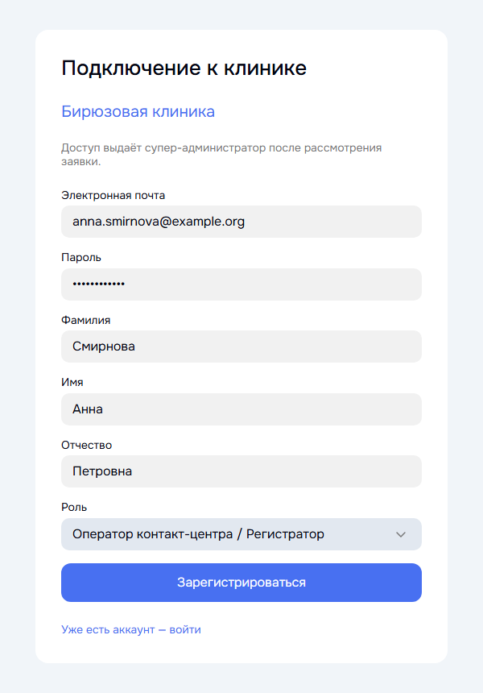
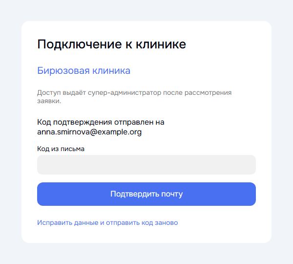
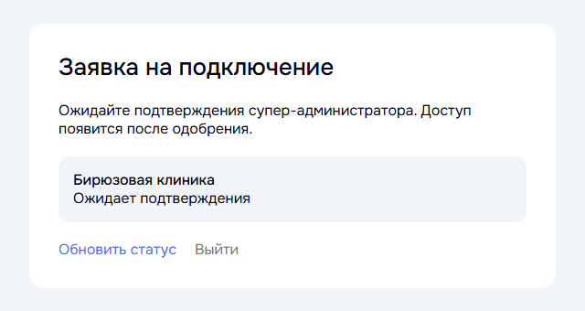
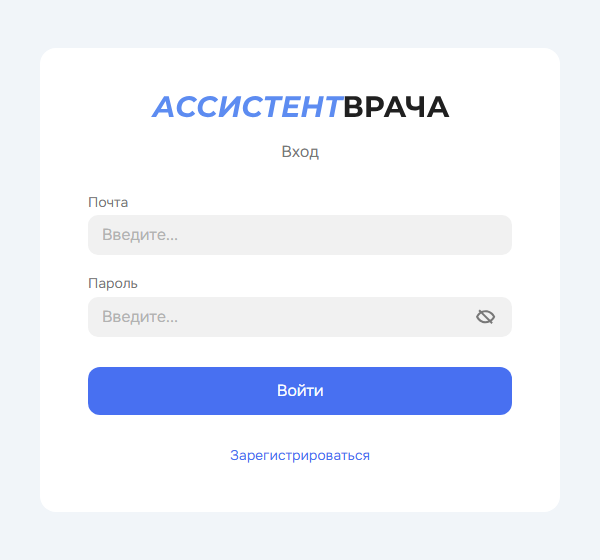

Регистрация и вход
Доступ к анкетам выдаётся через клинику. Ссылку на подключение присылает администратор клиники или супер-администратор сервиса. Без этой ссылки рабочие разделы не откроются.
-
Откройте ссылку на подключение
В письме или мессенджере будет ссылка вида anketa.vismuth.ru/clinic-join/…. Откройте её. На экране появится название клиники и форма «Подключение к клинике».

01 Форма подключения. Пример заполнения для оператора: роль «Оператор контакт-центра / Регистратор». -
Заполните данные
- Электронная почта. Она станет логином для входа.
- Пароль. От 8 до 128 символов. Пароль от почты и пароль от сервиса — разные.
- Фамилия, имя, отчество. Укажите так, как они должны отображаться в сервисе. Отчество можно не заполнять.
-
Выберите роль
Роль в поле «Роль» Кому подходит Что откроется Оператор контакт-центра / Регистратор Сотруднику регистратуры, который создаёт ссылки и печатает анкеты Разделы анкет и заполненные анкеты своей клиники Врач Врачу, который смотрит анкеты пациентов и создаёт протокол «Анкеты для врачей» и «Протоколы» Роли «Админ» и «Админ и врач» предназначены для администраторов клиники. В этой инструкции они не рассматриваются.
Для роли «Врач» отметьте хотя бы одну специализацию из доступных в форме. Сейчас доступны гастроэнтерология и стоматология.
-
Подтвердите почту
Нажмите «Зарегистрироваться». Сервис отправит на указанную почту письмо с кодом. Введите код в поле «Код из письма» и нажмите «Подтвердить почту».

02 Код подтверждения отправлен на почту, указанную при регистрации. Если письма нет, проверьте папку «Спам». Если код не пришёл или истёк, нажмите «Исправить данные и отправить код заново» и повторите отправку.
-
Дождитесь одобрения
После подтверждения почты заявка уходит супер-администратору сервиса. Пока он её не рассмотрел, открывается экран «Заявка на подключение».

03 Пока заявка не одобрена, рабочие разделы закрыты. Когда доступ одобрят, нажмите «Обновить статус» или войдите заново. Повторно регистрироваться не нужно. Кнопка «Выйти» завершает сеанс, если нужно войти под другой учётной записью.
Если пришло персональное приглашение, почта в форме уже заполнена. Придумайте пароль, повторите его и нажмите «Войти». Такое приглашение не требует отдельного одобрения. -
Войдите в сервис
Откройте anketa.vismuth.ru/login, введите почту и пароль, нажмите «Войти». После входа в шапке появятся разделы, доступные вашей роли. Кнопка «Инструкция» есть на экранах входа, подключения к клинике и в рабочем кабинете.

04 Вход по почте и паролю. Ссылка «Зарегистрироваться» здесь не подключает к клинике. Если вы уже зарегистрированы, на экране подключения нажмите «Уже есть аккаунт — войти», войдите и отправьте заявку на подключение к клинике.
Работа с анкетами
Набор разделов зависит от направления клиники. В стоматологическом направлении основная работа идёт в «Анкетах для стоматологии», в многопрофильном — в «Заполненных анкетах».
«Анкеты для стоматологии»
Персональные ссылки, контроль заполнения, печать карточки.
«Заполненные анкеты»
Общие и гастроэнтерологические анкеты, ссылки с врачом и датой приёма.
Стоматология Анкеты для стоматологии
Раздел открывается из верхнего меню. Слева — кнопка новой ссылки, поиск и список пациентов, справа — карточка выбранной анкеты.
Создать персональную ссылку
-
Нажмите «Новая ссылка для пациента»
Откроется форма «Создание ссылки пациенту». Чтобы закрыть её, нажмите крестик.
-
Укажите ФИО и дату рождения
Фамилия и имя обязательны, отчество можно не заполнять. Дата рождения необязательна, но с ней карточка пациента полнее.
-
Нажмите «Создать ссылку»
Адрес появится в той же форме. Скопируйте его и отправьте пациенту.
-
Закройте окно после отправки
Нажмите крестик. Персональная ссылка действует 7 дней и отображается в форме до её закрытия.
Использовать общую ссылку или QR-код
В той же форме найдите «Общая ссылка на стоматологию». Эту бессрочную ссылку можно добавить в сообщение о записи или распечатать QR-код для регистратуры. Каждый пациент заполняет свою анкету.
Как пациент заполняет анкету
Пациент проходит пошаговую форму. Он отмечает пункты на экране «Повод визита», отвечает на вопросы о здоровье, заполняет уточнения по выбранным ответам и переходит к дополнительным вопросам.
- По выбранным аллергиям форма отдельно спрашивает, на что была реакция и как она проявлялась.
- Кнопка перехода находится внизу. Если видно «Ниже ещё есть пункты», прокрутите список.
- Стрелка слева вверху возвращает к предыдущему экрану. Выбранные ответы сохраняются.
- В конце пациент нажимает «Отправить анкету». После этого ответы появятся в карточке.
Найти анкету
- Введите фамилию, имя или их часть в поле «ФИО пациента».
- По умолчанию видны заполненные анкеты за все даты. Выберите день в календаре, чтобы отфильтровать список по дате заполнения.
- Нажмите «Все даты», чтобы сбросить фильтр.
- Нажмите на строку пациента, чтобы открыть карточку справа.
Анкета появляется в списке после того, как пациент отправит ответы.
Что в карточке
- «Самое важное». Красный список рисков: аллергии, лекарства, хронические состояния, которые влияют на приём.
- «С чем пришёл». Повод визита и комментарий пациента.
- «Уточнения». Вопросы, которые задала анкета, и ответы пациента дословно.
- «Здоровье». Только подтверждённые состояния. Если пациент ответил «Не знаю», появится пометка «Нужно уточнить».
- «О пациенте». Дата рождения и сведения о последнем визите к стоматологу, если они указаны.
- «Препараты» и «Аллергия». Названия лекарств и проявления аллергии.
- «Что доспросить». Вопросы, которые анкета оставила врачу.
Отрицательные ответы в экранной карточке скрыты, чтобы не читать длинные списки «нет». В печатном бланке остаются все исходные ответы.
Распечатать карточку
-
Нажмите «Распечатать»
Откроется системное окно печати браузера. Выберите принтер и нажмите «Печать».
-
Проверьте листы
Если в анкете были длинные ответы, сервис добавит лист продолжения. Подпишите все листы: основной бланк и продолжение.
Многопрофильная клиника Заполненные анкеты
Раздел показывает заполненные анкеты клиники. Слева — фильтры и список, справа — карточка. Ссылку можно привязать к врачу, дате и времени приёма.
Создать ссылку на приём
-
Нажмите «Новая ссылка для пациента»
Откроется форма «Создание ссылки пациенту».
-
Выберите врача
Если в списке один врач, он выбран автоматически. Можно выбрать другого доступного врача или вариант «Пациент выберет врача». Указанный врач закрепляется за ссылкой.
-
Укажите дату и время
Это необязательно. Если дата и время заданы, пациент не будет вводить их повторно: они уже привязаны к ссылке.
-
Нажмите «Создать ссылку»
Скопируйте адрес и отправьте его пациенту. Раскройте «QR-код», чтобы показать его на экране или скачать.
-
Используйте общую ссылку клиники
Общая ссылка клиники доступна под кнопкой «Новая ссылка для пациента» и в самой форме. По ней пациент сам указывает данные приёма.
Найти анкету
- Выберите вид: «Все виды», «Общая», «Гастроэнтерология» или «Стоматология».
- Введите имя пациента в поле «Имя пациента».
- Нажмите на дату и выберите день приёма. По умолчанию стоит сегодняшняя дата.
- Нажмите на строку с временем и кодом, чтобы открыть карточку.
Что в карточке
- В шапке: время приёма, код, имя пациента и тип приёма («Первичный» или «Повторный»).
- Ниже: клиника и дата заполнения.
- Разделы: «Жалобы», «Анамнез жизни», «Аллергологический анамнез», «Принимаемые препараты».
- Блок «Что доспросить» — вопросы, которые анкета оставила врачу.
У стоматологической карточки есть кнопка «Печать». Для общей и гастроэнтерологической анкет врач может создать протокол в своём кабинете.
Если список пуст
Сначала проверьте дату: по умолчанию открыт сегодняшний день. Затем сбросьте вид анкеты на «Все виды» и очистите поле имени. Если анкет всё равно нет, пациент ещё не завершил заполнение или анкета относится к другому дню приёма.
Работа с анкетами
Врач открывает заполненные анкеты в разделе «Анкеты для врачей» и создаёт из них протокол. Стоматологические анкеты ведёт регистратура: в личный список врача они не попадают.
Анкеты пациентов Анкеты для врачей
Раздел открывается из верхнего меню. Слева — поиск и список, справа — карточка выбранной анкеты. В список попадают завершённые анкеты, привязанные к вам.
-
Найдите пациента
Введите фамилию, имя или четырёхзначный код в поле «ФИО пациента или код». Выберите день приёма в календаре или оставьте «Все даты».
-
Откройте карточку
Нажмите на строку с кодом и именем. Справа появятся разделы анкеты.
-
Прочитайте разделы
В шапке карточки: время приёма, код, имя и тип приёма. Ниже — «Жалобы», «Анамнез жизни», «Аллергологический анамнез», «Принимаемые препараты». У заполненного раздела есть кнопка копирования.
Если пациент пропустил раздел, на его месте будет «Пациент не ответил». Это не ошибка загрузки.
-
Проверьте «Что доспросить»
В конце карточки собраны вопросы, которые анкета оставила врачу. Ответы пациента на эти вопросы стоит уточнить на приёме.
-
Откройте карточку поверх окон
Кнопка «Открыть поверх окон» работает в браузерах с поддержкой Document Picture-in-Picture (Chrome и Edge). Карточка остаётся на экране, пока вы работаете с протоколом. В остальных браузерах кнопка может быть недоступна.
-
Создайте протокол
Внизу карточки нажмите «Создать протокол». Если доступна одна структура протокола, он создастся сразу. Если несколько — выберите нужную из меню. После создания кнопка сменится на «Открыть протокол».
Что спрашивает гастроэнтерологическая анкета
Анкета начинается с вопроса «С какой проблемой вы обращаетесь к гастроэнтерологу?» Дальнейшие вопросы зависят от жалоб. Анкета уточняет частоту и вид стула, недавние изменения и время их начала. По лекарствам просит указать названия и дозировку или число таблеток либо капсул в день. Если пациент сообщает об аллергии на лекарства, анкета уточняет, как она проявлялась.
Если анкета не открывается
- «Анкета обрабатывается». Подождите: сервис ещё готовит сводку. Откройте карточку позже.
- «Анкета не обработана». Обратитесь к администратору клиники: без обработки разделы не показываются.
- В списке пусто. Сбросьте дату кнопкой «Все даты» и проверьте, что имя или код введены верно.
Стоматология Анкету ведёт регистратор
В стоматологическом направлении персональную ссылку создаёт регистратор. Он отправляет её пациенту, следит за заполнением и печатает карточку. Врач получает карточку на приём.
На что смотреть в карточке
- «Самое важное». Риски, которые влияют на приём: аллергии, лекарства, хронические состояния.
- «С чем пришёл». Повод визита и комментарий пациента.
- «Здоровье». Подтверждённые состояния и пометки «Нужно уточнить».
- «Препараты» и «Аллергия». Что пациент принимает и на что реагирует.
- «Что доспросить». Вопросы, которые стоит задать на приёме.
Если нужна электронная карточка
Попросите регистратора открыть анкету в разделе «Анкеты для стоматологии». Он может показать карточку на экране или распечатать её. Самостоятельно открыть стоматологическую анкету из личного списка врача нельзя.
Если что-то не работает
Короткие ответы на ситуации, которые чаще всего вызывают вопросы.
Зарегистрировался, но рабочих разделов нет
Скорее всего, заявка ещё не одобрена. Откройте экран «Заявка на подключение» и нажмите «Обновить статус».
Если написано «Заявка отклонена», попросите у администратора новую ссылку и подайте заявку повторно.
Не вижу «Анкеты для стоматологии»
Раздел появляется у регистратора, если клиника использует стоматологическую анкету. Если клиника работает с общими и гастроэнтерологическими анкетами, откройте «Заполненные анкеты».
Врач не видит стоматологическую анкету
Попросите регистратора открыть карточку или распечатать её для приёма.
Персональная ссылка истекла или потерялась
Проверьте по ФИО, не появилась ли заполненная анкета. Если её нет, нажмите «Новая ссылка для пациента» и отправьте новый адрес.
Не приходит код подтверждения
Проверьте папку «Спам» и правильность адреса. Код действует ограниченное время.
На экране подтверждения нажмите «Исправить данные и отправить код заново». Если ошибка повторяется, обратитесь к администратору клиники.
Не получается создать ссылку
Создавать пациентские ссылки могут супер-администратор, администратор и оператор клиники.
Учётная запись только с ролью «Врач» получает отказ. Если ссылка нужна врачу, её создаёт регистратор или администратор.
В «Заполненных анкетах» пусто, хотя пациент заполнял
Проверьте дату приёма: по умолчанию открыт сегодняшний день. Анкета могла относиться к другому дню.
Сбросьте вид анкеты на «Все виды» и очистите поле имени. Если пациент ещё заполняет, карточка появится после завершения.
Можно ли отправить одну ссылку нескольким пациентам
Общую ссылку можно отправить нескольким пациентам. Персональная ссылка предназначена для одного пациента.
Общую ссылку клиники можно отправить нескольким пациентам. Если ссылка содержит данные конкретного приёма, отправьте её пациенту, записанному на этот приём.